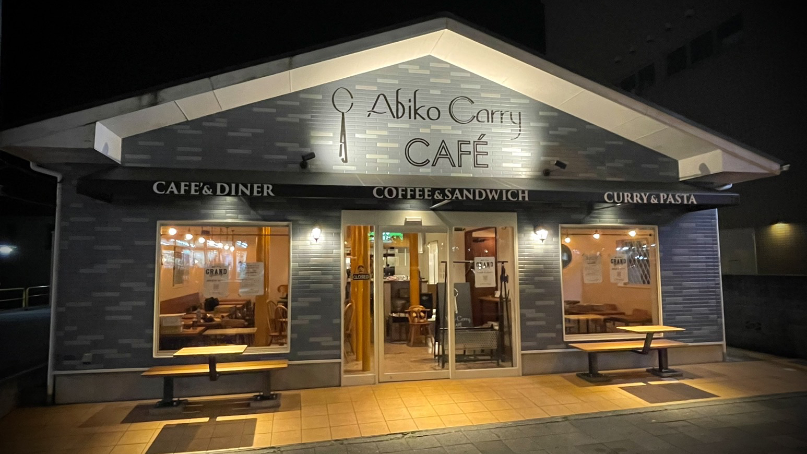
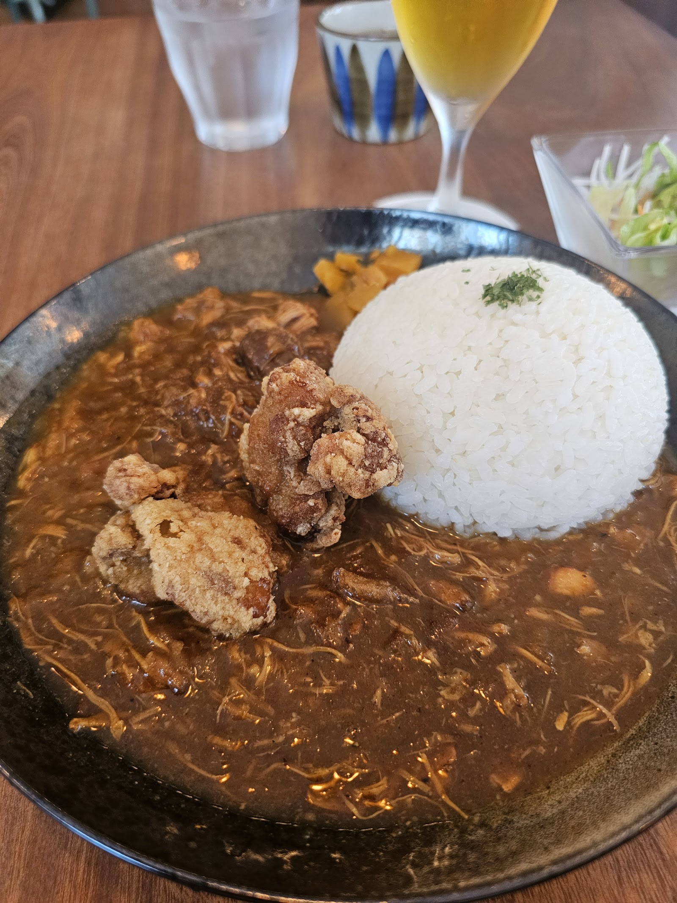
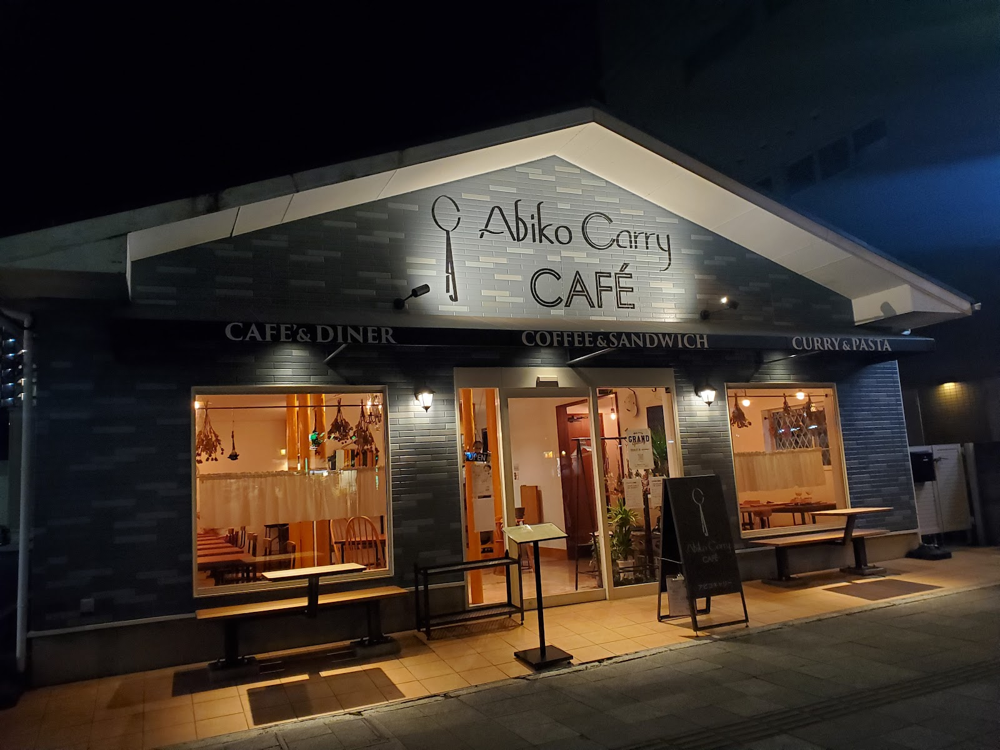

Abiko Carry / 我孫子駅前のカリーカフェ
我孫子駅前、スパイスとレコードが香る大人カフェ。
マイルドなカリーと、ドライフラワーに包まれるひととき。

写真: makoto ichikawaAbout
アビコキャリーについて
常磐線・我孫子駅からほど近い場所にたたずむ「アビコキャリー」。ドライフラワーが飾られた温かみのある店内には、レコードの音色がそっと流れ、日常の合間にほっとひと息つける空気が広がっています。
店名にも通じる、まろやかな口当たりの中にスパイスの香りが立つカリー。パスタやライスのお食事メニュー、香り高いコーヒー、軽やかなサンドイッチまで、その日の気分に合わせて選べるラインナップを揃えています。
スタッフの気取らない、フレンドリーな接客も心地よさのひとつ。おひとりでのランチにも、友人とのおしゃべりにも、我孫子の街に寄り添う一軒として過ごしていただけます。
★4.1Google評価(クチコミ70件)
写真: Lani PangilinanVoice
お客様の声
Googleに寄せられたクチコミより、5件をそのままご紹介します。
★★★★★
Great food! Chicken tasted superior 😋 At first I thought that the place was a bit expensive; but it turned out that it has a great price/quality ratio 😀 Basically the interior and exterior of this place, you can find everywhere... Place does have a very friendly atmosphere. Not a typical Japanese flavour in the place. Quite bussy too for a Saturday lunchtime. Menu in Japanese only, so I got my Google Lens app out again for translation. Waiterress was very friendly and the place has a nice ginger ale.
★★★★☆
This cafe was on my way back from praying at a temple in Naritasan in this year. A cafe near Abiko Station, the last station on the Narita Line. Although it is not as good as Belgium or France, you can drink a pretty delicious cafe latte. The photo shows cream soda, a popular drink in Japan. The dried flower interior was also stylish.
★★★★★
Came here after a walk through Akebonoyama Agriculture Park and all I can say is the food was fantastic! Both the curry and the doria bowl were really well made and tasted like homestyle food. Service very friendly included. Very much off the main tourist path, but if you happen to be in ths area, it's worth to consider eating here.
★★★★★
I went there for lunch. The Abiko Curry was mild yet had a good amount of spice, and the ingredients were tender and very delicious! (It contained shredded meat that resembled pulled pork.) And the seaweed cream pasta was surprisingly delicious. I wondered if pasta would be good at a curry restaurant, so I ordered it. It was exquisite. It was so delicious that I wanted to eat every last drop of the sauce. It's a shame it was listed as a daily special. I wish they would make it a permanent menu item. The food is served a little slowly, so I recommend going with plenty of time to spare.
★★★★☆
This stylish and convenient restaurant is located right in front of the station. The taco rice, packed with plenty of vegetables, is very filling and satisfying.